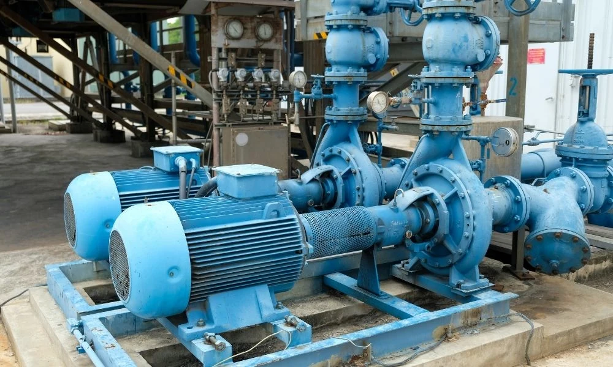
Bombas centrífugas
Principio de operación, curvas, NPSH y cavitación, líquidos calientes y viscosos, punto de operación, serie y paralelo, selección, materiales y mantenimiento.
De la física del impulsor a la selección de la bomba
- 01Fundamentos y anatomíaPrincipio centrífugo, componentes, tipos de impulsores y velocidad específica.
- 02Curvas característicasCurva , eficiencia, potencia y el punto de mejor eficiencia (BEP).
- 03NPSH, cavitación y líquidos calientes vs , mecanismo de daño, líquidos cerca de su punto de burbuja y soluciones.
- 04Sistemas y punto de operaciónCurva del sistema, control de caudal, operación en serie y paralelo.
- 05Selección y mantenimientoEficiencia energética, líquidos viscosos, materiales, sellos, especificación y mantenimiento predictivo.
La bomba es el equipo más repetido de cualquier planta de proceso: mueve agua de servicios, condensados, productos y solventes. Una bomba bien seleccionada da años de operación sin problemas; una marginal, paradas costosas y fallas catastróficas. Las cifras de la sesión salen del Explorador de bombas centrífugas del curso.
Fundamentos de bombeo
Energía rotacional → presión
Conversión de energía rotacional en presión y flujo mediante fuerzas centrífugas.
De qué está hecha
Impulsor, voluta, eje, cojinetes, sello mecánico, anillos de desgaste y carcasa.
Cómo responde
(altura-caudal), (eficiencia-caudal) y (potencia-caudal).
Margen contra cavitación
Net Positive Suction Head: margen energético en la succión para prevenir cavitación.
La diferencia entre una bomba bien seleccionada y una marginal puede ser años de operación sin problemas versus paradas costosas y fallas catastróficas.
Fundamentos y anatomía
Cómo una rueda con paletas girando convierte energía mecánica en presión, y de qué partes depende esa conversión.
El principio centrífugo
El principio de operación de las bombas centrífugas es simple: impartir energía cinética a un fluido mediante rotación, y luego convertir esa velocidad en presión útil.
El fluido entra por el centro (ojo) del impulsor a baja velocidad y presión, y es lanzado hacia la periferia por las paletas.
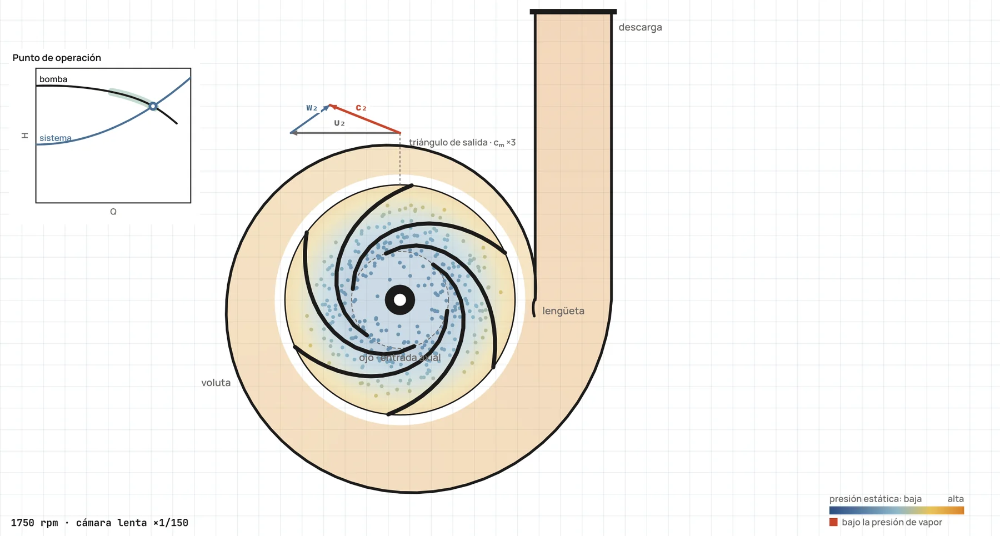
El fluido entra axialmente por el ojo, los álabes lo aceleran y la voluta lo lleva a la descarga. El color es la presión estática: baja en el ojo, sube a lo largo del álabe y en la voluta (Explorador de bombas centrífugas, cámara lenta).
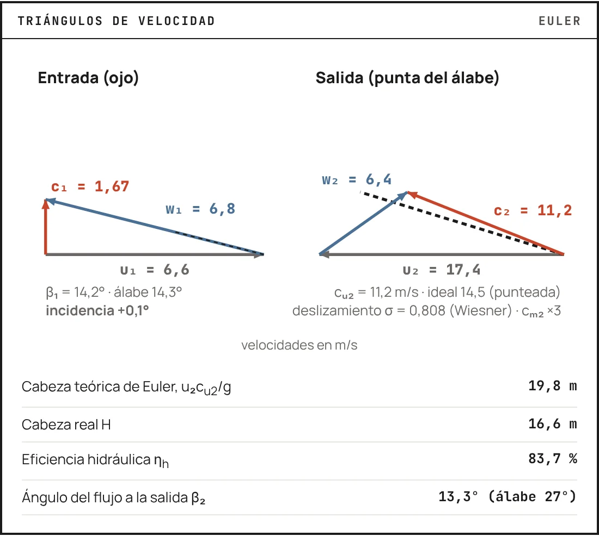
Triángulos de velocidad a la entrada y a la salida del álabe: la velocidad de la punta, la relativa al álabe y la absoluta. De ellos sale la cabeza teórica de Euler, .
En el impulsor
Cuando el impulsor gira, las paletas arrastran el fluido desde el centro (ojo) hacia la periferia. La aceleración centrífuga genera un campo de presión donde la presión aumenta radialmente.
- El fluido entra axialmente con baja velocidad y presión.
- Es acelerado tangencial y radialmente por las paletas.
- Sale con alta velocidad (20-60 m/s típico) y presión moderada.
De velocidad a presión
El área creciente de la voluta desacelera el fluido gradualmente, convirtiendo energía cinética en presión según el principio de Bernoulli:
Un impulsor de 300 mm a 3000 rpm genera una aceleración centrífuga 15 000 m/s² (¡más de 1500 g!), lo que explica cómo los líquidos ganan 50-200 m de altura en milisegundos.
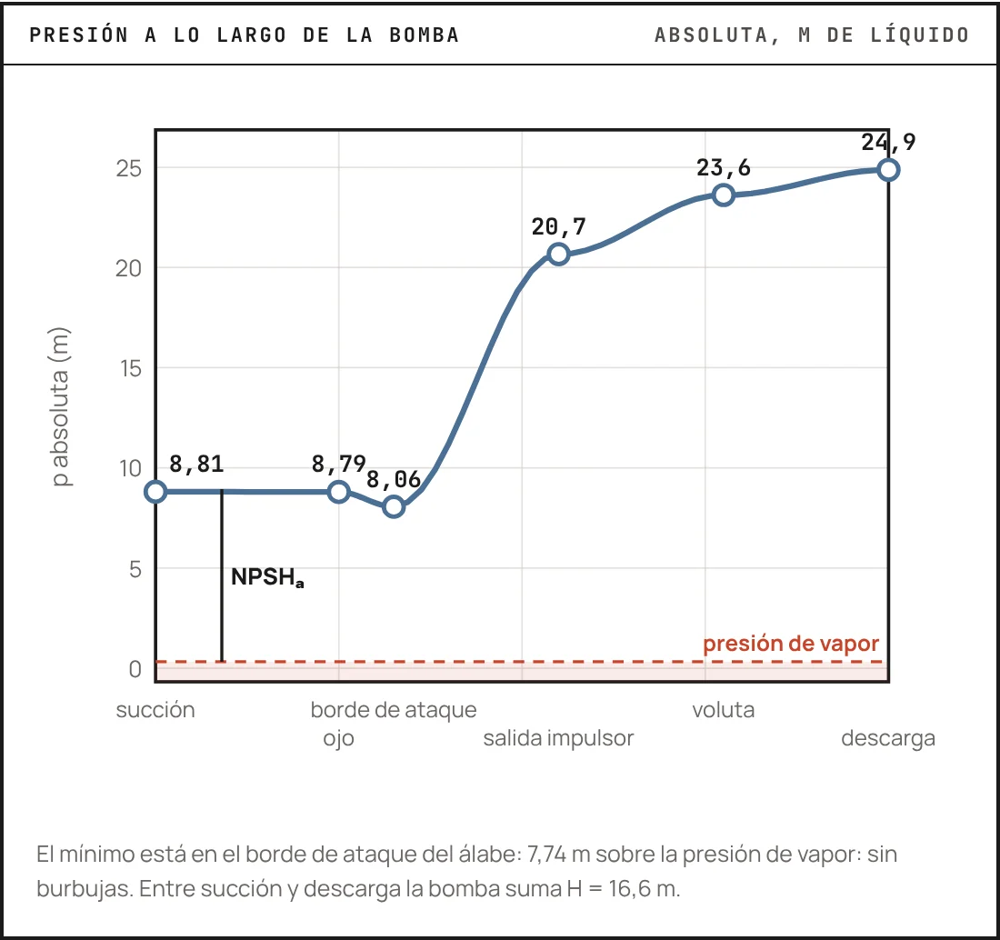
Presión absoluta a lo largo de la bomba: el impulsor da la mayor parte del aumento y la voluta recupera el resto, convirtiendo velocidad en presión.
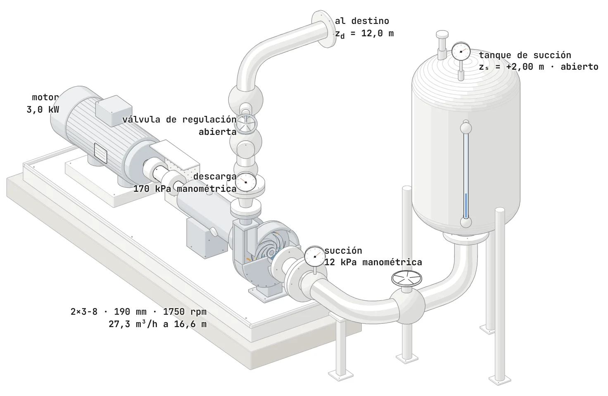
Una bomba de succión axial en su instalación, con la mitad de la tapa de succión quitada: se ven el impulsor y la voluta. Detrás, el sello, la caja de rodamientos, el acople con su guarda y el motor (Explorador de bombas centrífugas).
Anatomía de una bomba centrífuga
Corazón de la bomba; discos con paletas que transfieren energía del eje al fluido. Geometría optimizada por CFD.
Carcasa espiral que colecta el fluido y convierte velocidad en presión. Forma evolvente crítica para la eficiencia.
Transmite torque del motor al impulsor. Acero inoxidable, 40-100 mm de diámetro, diseñado para velocidad crítica y deflexión mínima.
Soportan cargas radiales y axiales; vida > 40 000 horas con lubricación apropiada.
Previene fugas en la penetración del eje; el componente más delicado: 80 % de las fallas ocurren aquí.
Minimizan la recirculación interna, mantienen la eficiencia y son reemplazables.
Media sección de cada impulsor, con el eje abajo (línea de trazo y punto). El líquido entra por la izquierda y sale hacia arriba; los discos van en trazo grueso, la cara de la carcasa en gris punteado y el anillo de desgaste del cerrado en amarillo.
Tipos de impulsores
Paletas entre dos discos. Máxima eficiencia (85-92 %), mínima recirculación. Tolera pocos sólidos; común en agua limpia y químicos.
Paletas en un disco contra la carcasa. Eficiencia media (75-85 %), maneja algunos sólidos. El ajuste axial compensa el desgaste.
Paletas sin discos. Eficiencia menor (60-75 %), excelente para sólidos y fibrosos. Gran clearance previene atascamiento.
Velocidad específica
La velocidad específica caracteriza la geometría óptima del impulsor para un caudal y una cabeza dados, evaluada en el BEP:
Con en rpm, en m³/s y en m por etapa. No es adimensional: con galones por minuto y pies, como en los catálogos de EE. UU., el número es unas 51,6 veces mayor.
La eficiencia máxima alcanzable está hacia ( en unidades de EE. UU.). La 2×3-8 del explorador a 1750 rpm tiene : radial y angosta, como muchas bombas de proceso pequeñas.
Radial angosto, . Mucha cabeza y poco caudal por etapa; las bombas de varias etapas viven aquí.
Radial ancho (tipo Francis). La mayoría de las bombas de proceso, y el máximo de eficiencia.
Flujo mixto: impulsor ancho, cabeza moderada y caudal grande.
Flujo axial (hélice): poca cabeza y mucho caudal, una sola etapa.
Las curvas características
Toda bomba se describe con cuatro curvas sobre el mismo eje de caudal: altura, eficiencia, potencia y NPSH requerido.

La carta de una bomba como en un catálogo: una curva por diámetro de impulsor (la gruesa es la de 190 mm), las islas de eficiencia y, debajo, el NPSH y la potencia sobre el mismo eje de caudal.
La curva H-Q
La curva altura-caudal () define cómo responde la bomba a diferentes demandas de flujo.
Descendente: máxima altura a válvula cerrada (shutoff head), disminuye continuamente al aumentar el flujo.
FÍSICA SUBYACENTE
A , el impulsor solo genera presión centrífuga:
Con flujo, las pérdidas hidráulicas aumentan: .
Tipos de curvas H-Q
- Curva empinada ( grande): bomba «rígida», mantiene la presión ante cambios de caudal.
- Curva plana: bomba «suave», flujo estable; ideal para operación en paralelo.
- Curva con máximo: inestable entre shutoff y el máximo; puede oscilar (surging).
Modificaciones: recortar el impulsor aplana y baja la curva; la velocidad variable la desplaza verticalmente.
La pendiente de la curva determina si la bomba es «rígida» o «suave».
Las islas de eficiencia de la carta: cada curva tiene forma de campana, con su máximo en el BEP (el rombo, 72,3 % con el impulsor de 190 mm).
Eficiencia
La eficiencia hidráulica cuantifica qué fracción de la potencia entregada al eje se convierte en energía útil del fluido:
Fricción, turbulencia, choque: 5-15 %.
Recirculación interna: 2-5 %.
Cojinetes y sellos: 1-3 %.
Fricción del impulsor con el fluido: 2-8 %.
Eficiencia: BEP e impacto económico
La curva tiene forma de campana característica.
Eficiencia máxima de 70-90 % en el punto de mejor eficiencia.
Cero a , disminuye gradualmente al alejarse del BEP.
Una bomba de 75 % de eficiencia que pide 100 kW al freno 8000 h al año ahorra unos 10 500 kWh/año con un punto más de eficiencia.
Operar lejos del BEP desperdicia energía y, además, aumenta las cargas radiales, la vibración y el desgaste del sello. Dimensione la bomba para operar cerca del BEP en condiciones normales.
El panel de abajo de la carta: la potencia al freno de una bomba radial sube con el caudal, y el motor se escoge con la de la derecha de la curva.
Curva de potencia
Muestra la demanda real sobre el motor a diferentes flujos: crítica para la especificación correcta y la prevención de sobrecargas. El comportamiento depende de :
- Radiales ( bajo): la potencia aumenta con el flujo continuamente ( aprox.).
- Mixtas ( medio): aumenta hasta cerca del BEP, luego aplana o cae ligeramente.
- Axiales ( alto): potencia máxima a shutoff, disminuye con el flujo.
Factores que afectan la potencia
- Viscosidad: aumenta la potencia significativamente.
- Densidad: afecta proporcionalmente ().
- Sólidos en suspensión: aumentan la demanda.
El motor debe tener un factor de servicio 1,15-1,25 sobre la máxima potencia esperada.
Instrumentación: el amperímetro del motor indica el punto de operación aproximado, útil para diagnóstico remoto.
La densidad, la viscosidad y los sólidos del líquido desplazan la curva de potencia hacia arriba; la línea punteada es el motor con su margen.
NPSH y cavitación
El margen de presión en la succión decide si la bomba opera silenciosa durante años o se erosiona desde adentro.
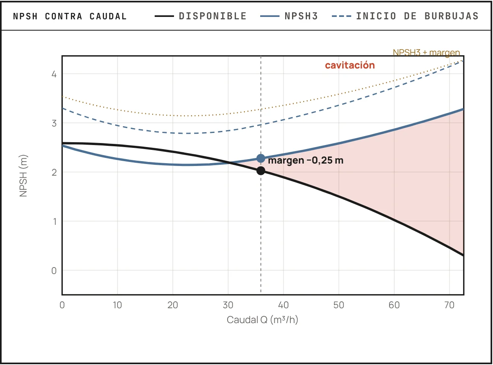
El NPSH disponible baja con el caudal y el NPSH3 de la bomba sube: a la derecha del cruce la bomba cavita (caso «Succión negativa con agua caliente» del explorador).
NPSH
El Net Positive Suction Head () cuantifica el margen energético disponible para prevenir la cavitación, fenómeno donde la presión local cae por debajo de la presión de vapor formando burbujas destructivas.
Para líquidos calientes o volátiles, el gobierna el diseño. Ejemplo: el agua a 80 °C tiene kPa, 4,97 m de columna. A nivel del mar quedan 5,7 m de NPSH antes de restar la succión; en Bogotá, con 73,7 kPa, solo 2,8 m.
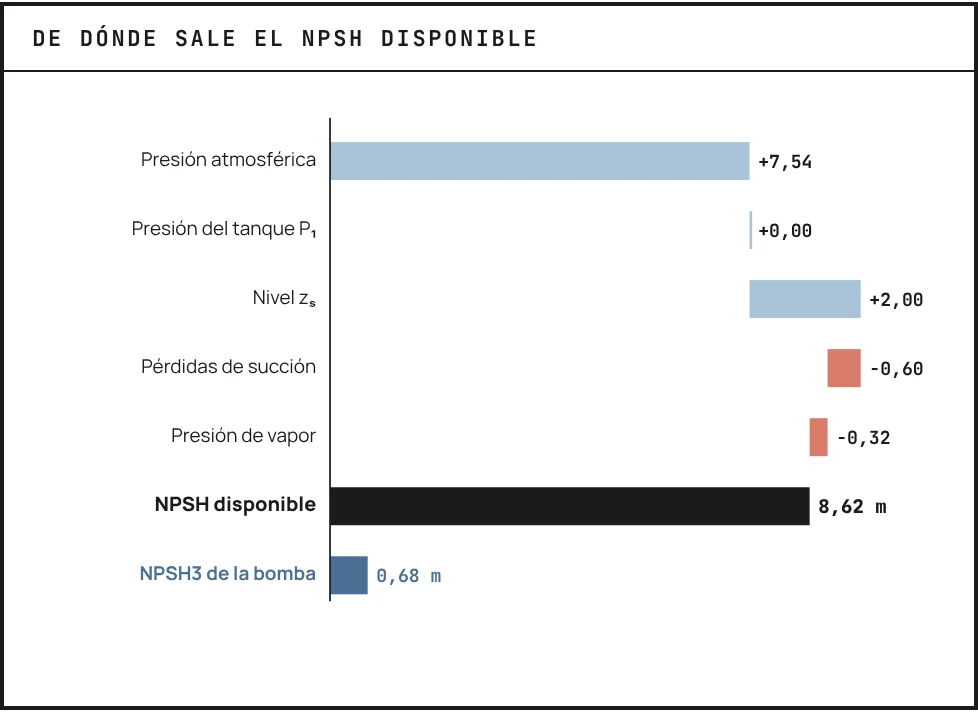
De dónde sale el del caso base del explorador, en Bogotá: la presión atmosférica y el nivel suman; las pérdidas de la succión y la presión de vapor restan. Abajo, el NPSH3 de la bomba.
NPSH disponible (NPSHa)
Es la energía disponible en la succión de la bomba por encima de la presión de vapor del líquido:
- = presión atmosférica o del tanque (Pa)
- = presión de vapor del líquido (Pa)
- = peso específico del líquido (N/m³)
- = altura estática de succión (m)
- = pérdidas por fricción en succión (m)
NPSH requerido (NPSHr)
Es la energía mínima que necesita la bomba en la succión para funcionar sin cavitación. Características:
- Depende del diseño de la bomba.
- Proporcionado por el fabricante: es el NPSH3, con 3 % de caída de cabeza.
- Varía con el caudal de operación.
- Se obtiene de las curvas de la bomba.
Condición para evitar cavitación:
El NPSH3 crece hacia caudales altos, y en muchas bombas también hacia caudales muy bajos, por la recirculación a la entrada del impulsor.

Presión absoluta a lo largo de una bomba que cavita (caso «Succión negativa con agua caliente» del explorador): el mínimo, en el borde de ataque del álabe, queda 0,93 m bajo la presión de vapor.
El perfil de presión dentro de la bomba
El se entiende mejor siguiendo la presión del fluido a lo largo de su recorrido por la bomba:
- Succión: el fluido llega con la presión de la brida; su distancia a es el NPSH disponible.
- Ojo y borde de ataque: el líquido acelera y choca con el álabe, y la presión cae a su mínimo; si baja de , nacen burbujas.
- Impulsor y voluta: la presión se recupera y las burbujas colapsan violentamente contra el metal.
- Descarga: el fluido sale con la cabeza de la bomba.
Las burbujas nacen en el punto de menor presión y colapsan aguas abajo, en el impulsor, donde erosionan el metal. El protege ese mínimo: si nunca baja de , no hay burbujas que colapsen.
Mecanismo de daño por cavitación
La cavitación daña por el colapso violento de las burbujas de vapor cerca de superficies sólidas, no por la formación de burbujas en sí.
Simulación numérica del colapso de una burbuja junto a una pared (Beig y Johnson): el colapso asimétrico forma el chorro y las ondas de choque que erosionan el metal. En YouTube.
Factores agravantes
- Gas disuelto: reduce la violencia del colapso (efecto cushioning).
- Temperatura alta: acelera el daño (vapor más voluminoso).
- Materiales duros: resisten mejor, pero ninguno es inmune.
Ubicación del daño
- Entrada del impulsor: insuficiente.
- Puntas de paletas en descarga: recirculación.
- Carcasa cerca del cutwater: desalineación del flujo.
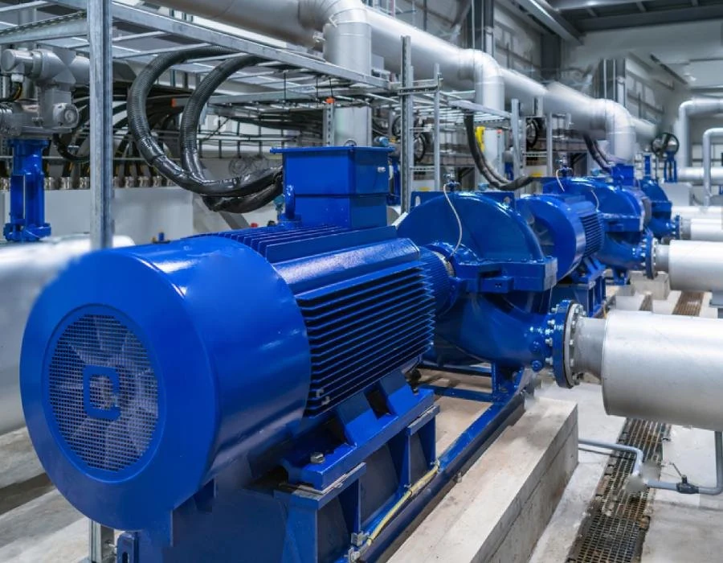
En una sala de bombas real, cada metro de tubería, codo y filtro en la succión resta NPSH disponible.
Cálculo detallado de NPSHd
El cálculo preciso requiere atención meticulosa a cada componente, pues los márgenes son típicamente pequeños (2-5 m total). Desde un tanque presurizado:
Las pérdidas de succión incluyen:
- Entrada del tanque ( típico).
- Tubería recta (minimizar , maximizar ).
- Accesorios (evitar codos múltiples).
- Filtro/colador (factor de ensuciamiento 2×).
Factores críticos del NPSHd
- Velocidad de succión: mantener m/s.
- Efectos transitorios: el arranque genera una depresión momentánea.
- Temperatura variable: diseñe para la máxima temperatura posible.
Los servicios con menor NPSH disponible son los de líquidos calientes o volátiles: condensados, fondos de columna, solventes. Diseñe esas succiones con margen generoso.
Succiones cortas, de diámetro amplio y con pocos accesorios protegen el NPSH disponible.
NPSHr y la caída de presión
El representa la energía mínima necesaria en la succión para evitar cavitación, determinado experimentalmente por los fabricantes según normas (ANSI/HI, ISO).
El fluido debe acelerar desde la velocidad de succión hasta la velocidad del ojo del impulsor; esto conlleva una caída de presión asociada:
Si la presión resultante , ocurre cavitación.
El fabricante publica como el NPSH al que la cabeza cae un 3 %, con la cavitación ya desarrollada (NPSH3).
El NPSHr aumenta con…
Velocidades mayores en la succión exigen más margen.
Duplicar las rpm cuadruplica el NPSH requerido.
Ojos pequeños
Ojos pequeños → velocidades altas → mayor .
Por eso reducir la velocidad con un variador (VFD) es una de las formas más efectivas de bajar el cuando una bomba cavita en operación.
Factores de corrección del NPSHr
- Agua caliente e hidrocarburos livianos: el NPSH requerido real es algo menor que el medido con agua fría, porque el vapor es más denso y las burbujas crecen menos. Hay cartas para esa reducción, pero la práctica es no tomarla como margen.
- Líquidos viscosos: crece, porque aumentan las pérdidas a la entrada del impulsor; ANSI/HI 9.6.7 trae cómo estimarlo.
- Gases disueltos: salen de solución antes de la ebullición y la bomba se porta como si tuviera menos NPSH.
- La curva sube hacia caudales altos, y en muchas bombas también hacia caudales muy bajos.
En el la bomba ya cavita. Las primeras burbujas aparecen con un NPSH mayor (el explorador toma 1,3 × el NPSH3); en servicios críticos pida al fabricante el NPSH de inicio o deje más margen.
La curva del fabricante, medida con agua fría, se interpreta según el fluido que de verdad se bombea.
Síntomas y diagnóstico de cavitación
Como «grava en hormigonera» o «palomitas de maíz», frecuencia 1-20 kHz. La intensidad aumenta con la severidad.
Picos aleatorios 1-50× la frecuencia de paso de paletas. Banda ancha de ruido que crece exponencialmente.
Altura y flujo caen progresivamente; la curva se trunca en alto flujo. Eficiencia −5 a −30 %.
Erosión tipo panal en impulsor/carcasa: el metal parece «comido por termitas», concentrado en zonas de baja presión.
Prueba definitiva: aumentar el temporalmente (elevar el tanque, enfriar el líquido, reducir el flujo). Si los síntomas desaparecen, la cavitación queda confirmada.
Soluciones a problemas de NPSH
- Elevar el tanque de suministro.
- Presurizar el tanque con gas inerte (N₂).
- Enfriar el líquido: con agua, 10 °C menos cerca de la ebullición (90 → 80 °C) ganan 2,4 m; a 50 °C, apenas 0,5 m.
- Minimizar pérdidas de succión (aumentar diámetro).
- Operar a menor flujo.
- Reducir la velocidad con VFD ().
- Instalar un inducer (pre-impulsor axial).
- Bomba vertical sumergida.
- Multietapa con primera etapa de bajo .
- Bombas en serie con booster dedicado.
- Cambiar a una bomba de diseño especial bajo .
Anticipe los problemas en el bombeo de líquidos calientes y volátiles: diseñe con margen generoso desde el inicio. Las dos diapositivas siguientes tratan el caso más exigente.
Líquidos en su punto de burbuja
Condensados, agua del desaireador, fondos de una columna, la fase acuosa caliente de un decantador: llegan a la bomba en equilibrio con su propio vapor.
- La presión del recipiente deja de ayudar: solo queda la altura menos las pérdidas de la succión.
- Un recipiente abierto no pasa de su ebullición local: en Bogotá, 91,3 °C.
- En una mezcla se usa su presión de burbuja; con una segunda fase inmiscible, la suma de las dos presiones de vapor.

NPSH disponible de una misma succión al calentar el agua, en Bogotá: cerca de la ebullición se desploma (caso base del explorador).
Un condensado a 90 °C en un recibidor abierto de Bogotá
73,7 kPa en el recibidor; agua a 90 °C, kPa y 965 kg/m³. Nivel 1,5 m sobre la bomba, 0,4 m de pérdidas, NPSH3 de 2,0 m.
= 1,47 m. Menos que el NPSH3: cavita.
A 3,0 m sobre la bomba: 2,97 m, razón 1,49. Saturado del todo, 2,6 m.
Un enfriador lo deja a 70 °C ( kPa): 5,53 m sin mover nada.
También sirven una bomba de bajo NPSH3 (más lenta, con inductor o vertical de barril), una succión corta y sin bolsas de vapor, un venteo de la carcasa al recipiente y una recirculación de flujo mínimo. Caso supuesto, con propiedades de tablas de vapor.
Sistemas y punto de operación
La bomba no trabaja sola: el caudal real lo decide el cruce entre lo que la bomba ofrece y lo que el sistema de tuberías demanda.
La curva del sistema del caso base del explorador, (Q en m³/h): parte de la cabeza estática y crece con el cuadrado del caudal.
La curva del sistema
Representa la energía (altura) que el sistema de tuberías demanda a la bomba para un caudal dado. Es la suma de la altura estática y las pérdidas por fricción:
Donde la altura estática es constante:
- = diferencia de elevación entre succión y descarga.
- = presiones en succión y descarga.
El componente de fricción
Las pérdidas por fricción crecen con el cuadrado del flujo:
- = coeficiente de resistencia del sistema (tuberías y accesorios).
- = caudal volumétrico.
La curva del sistema es intrínseca a la instalación y representa la «demanda» energética, mientras que la curva de la bomba es la «oferta» energética.
Su forma parabólica () significa que pequeñas variaciones en el caudal producen grandes cambios en las pérdidas.
La curva del sistema (azul) sobre la carta de la bomba: la oferta y la demanda en un mismo plano, con el punto de operación en 27,3 m³/h y 16,6 m.
El punto de operación
Es la intersección única donde la curva de la bomba () se cruza con la curva del sistema (). Allí la bomba entrega exactamente la energía que el sistema demanda, y el sistema acepta el caudal que la bomba proporciona.
- La bomba se ajusta automáticamente a este punto.
- Es el único punto estable de funcionamiento para esa configuración.
- Cualquier cambio en la bomba o el sistema desplaza el punto de operación.
VELOCIDAD VARIABLE
Al reducir la velocidad de la bomba (de a a ), toda la curva de la bomba baja según las leyes de afinidad y el punto de operación se desplaza a menor caudal y altura, manteniendo la eficiencia.
Las leyes de afinidad explican por qué reducir un 20 % la velocidad ahorra casi un 50 % de potencia.
Bajar el caudal a 60 m³/h: con la válvula o con el variador
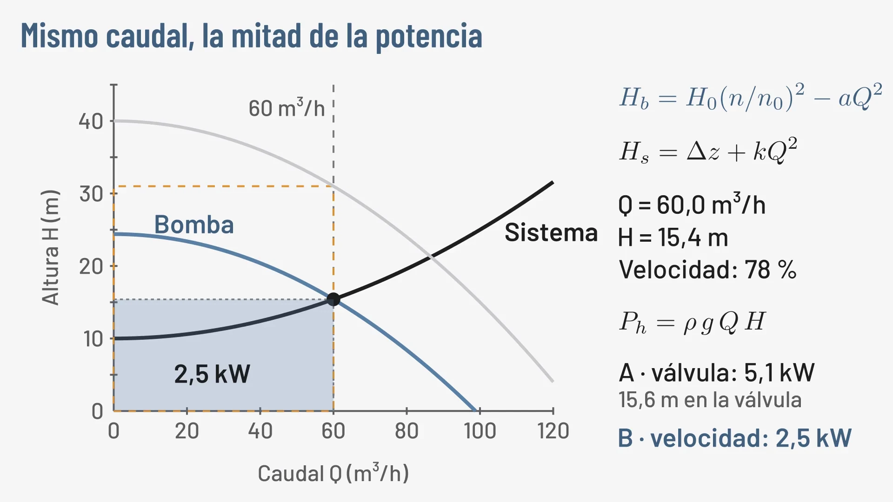
Ajustar el punto de operación
Aumenta artificialmente la resistencia del sistema, desplazando su curva hacia arriba y a la izquierda: reduce el caudal y sube ligeramente la altura. Sencilla pero ineficiente.
Modifica la curva completa de la bomba (leyes de afinidad), permitiendo operar a distintos caudales y alturas manteniendo la eficiencia. El método más eficiente energéticamente.
Recircula parte del flujo de descarga a la succión o a un tanque. Reduce el caudal efectivo, pero es ineficiente y puede calentar el fluido.
Reduce permanentemente el diámetro del impulsor, bajando la curva de la bomba. Se usa cuando la bomba está sobredimensionada.
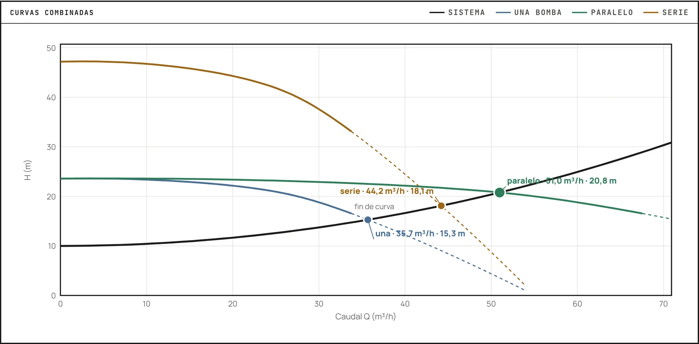
En paralelo las curvas se suman en caudal a la misma cabeza. Con dos 2×3-8 iguales en este sistema pasan 51,0 m³/h, unos 25,5 por bomba; una sola daría 35,7 (caso «Dos bombas en paralelo» del explorador).
Operación en paralelo
Operar bombas en paralelo aumenta confiabilidad y flexibilidad, pero requiere comprender las interacciones hidráulicas. Comparten un cabezal común de descarga, así que a igual presión cada bomba opera donde su curva corta la del sistema:
Condiciones de éxito:
- Curvas similares (±5 % en el rango de operación).
- Curvas estables ( siempre).
- Curvas planas ideales: minimizan el desbalance.
- adecuado para el flujo individual máximo.
Problemas comunes
- Las bombas «idénticas» nunca lo son del todo.
- El desgaste diferencial se agrava con el tiempo.
- Una bomba puede forzar a otra fuera de su curva.
- Recirculación entre bombas si está mal diseñado.
Diseño robusto
- Manifolds simétricos minimizan el desbalance hidráulico.
- Instrumentación individual permite el diagnóstico.
- Configuración N+1 da mantenimiento sin parar la planta.
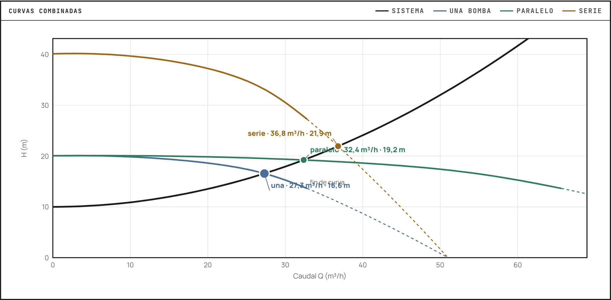
En serie las curvas se suman en cabeza al mismo caudal. En el sistema del caso base, dos en serie pasan 36,8 m³/h a 21,9 m; una sola, 27,3 m³/h.
Operación en serie
Las bombas en serie suman alturas manteniendo el mismo flujo, útil cuando la presión requerida excede la capacidad de las bombas individuales disponibles:
Aplicaciones típicas:
- Booster + principal para problemas de NPSH.
- Sistemas de alta presión: más económico que una bomba especial.
- Procesos con grandes cambios de elevación.
Consideraciones de diseño en serie
- La primera bomba debe manejar la presión de succión de la segunda.
- El rating de la carcasa es importante (presión acumulada).
- El máximo lo limita la bomba de menor capacidad.
- Secuencia de arranque: primera bomba primero, estabilizar, luego la segunda.
El punto de dos bombas en serie sube por la curva del sistema respecto al de una sola; con un sistema plano, dominado por la fricción, gana poco caudal.
Selección, materiales y mantenimiento
Elegir bien la bomba, el material y el sello, y mantenerlos, es lo que convierte un buen diseño en años de operación confiable.
Eficiencia energética en bombeo
La optimización de bombas ofrece un potencial significativo de ahorro energético. Fuentes: Hydraulic Institute, Europump y Departamento de Energía de EE. UU., Pump Life Cycle Costs (2001) y Variable Speed Pumping (2004).
Cómo ganar eficiencia
Mantener la bomba cerca de su Punto de Mejor Eficiencia (BEP) para maximizar el rendimiento energético.
Usar variadores de frecuencia (VFD) en lugar del estrangulamiento: cuando el caudal varía el ahorro es grande, porque la potencia cae con el cubo de la velocidad.
Reducir la fricción interna y mantener los componentes en buen estado.
Sustituir bombas antiguas con eficiencias inferiores al 60 % por modelos modernos.
Son eslabones de una misma cadena: operación óptima → control de velocidad → mantenimiento → reemplazo → monitoreo continuo, clave para un retorno de inversión rápido.
Materiales de construcción
Económico, buena maquinabilidad, frágil. OK para agua neutra, no ácidos/alcalinos. Común en servicios de utilidad.
Más fuerte, soldable, se oxida (requiere protección). Económico para hidrocarburos.
Excelente resistencia general, estándar en la industria de alimentos. Sensible a cloruros en caliente (picado y corrosión bajo tensión). Pulido sanitario disponible.
Superior resistencia a cloruros, mayor strength. Costo 1,5× SS316. Justificado en agua de mar y salmueras.
Resistencia química extrema, muy costoso. Para ácidos oxidantes/reductores.
Opción económica de protección: ebonita, PTFE, PFA. Cuidado con la delaminación.
En plantas de alimentos, aromas y farmacéutica: SS316L en contacto con producto y con las soluciones de limpieza en sitio (CIP); hierro fundido en servicios de planta; dúplex si hay salmueras.
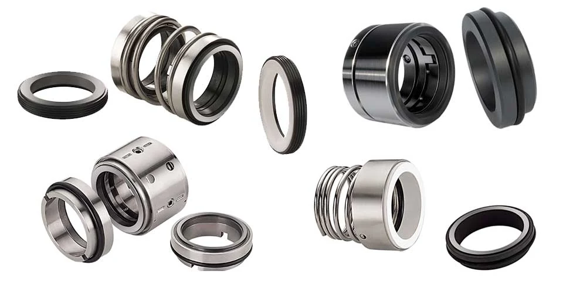
Sellos mecánicos: dos caras ultraplanas (rotativa y estacionaria), resorte y elastómeros de soporte.
Sellos mecánicos
El sello mecánico previene fugas donde el eje rotativo penetra la carcasa: el componente más delicado y crítico para la confiabilidad.
Principio: dos caras ultraplanas (flatness <0,001 mm), una rotativa y una estacionaria, presionadas por resorte; un film líquido de 1-3 µm las separa y lubrica.
Configuraciones:
- Sello simple: una barrera, económico, OK para fluidos benignos.
- Sello doble: dos barreras con fluido buffer entre ellas. Cero emisiones, para fluidos peligrosos o valiosos.
Materiales de caras
- Carbón vs. cerámica (agua).
- Carbón vs. carburo de silicio (abrasivos).
- Carburo de silicio vs. carburo de silicio (alta temperatura).
CAUSAS DE FALLA
80 % por operación incorrecta (dry run, cavitación, golpe de ariete). Vida esperada: 2-5 años en servicio continuo limpio; 6-18 meses en servicios severos.
El plan 11 de API 682 (recirculación desde la descarga hacia las caras) basta en la mayoría de servicios limpios; el doble sello se reserva para solventes inflamables, fluidos tóxicos o productos de alto valor.
Especificación de bombas
Fluido exacto, concentración, rango de temperatura, % de sólidos.
Flujo (normal/mínimo/máximo), presión de succión/descarga, calculado conservador.
Densidad, viscosidad, presión de vapor a temperatura. pH y cloruros si son relevantes.
Materiales de wetted parts, tipo de sello, orientación. Norma aplicable (ANSI, ISO, API).
Voltaje/frecuencia disponible, clasificación de área, factor de servicio. Enclosure (TEFC típico).
Switches de presión/flujo/temperatura requeridos. Transmisores para control y monitoreo.
No sobre-especificar: requerimientos innecesarios limitan los oferentes y aumentan el costo.
Mantenimiento predictivo
El espectro identifica problemas: 1× RPM = desbalance, 2× = desalineación, >3× = mecánico. La tendencia importa más que el valor absoluto.
Partículas de desgaste indican el componente (Fe = cojinetes, Cr = sellos, Si = contaminación). Agua >200 ppm degrada la lubricación.
Detecta problemas de cojinetes (>80 °C alarma), acoplamientos desalineados y motores sobrecargados. Barata y no invasiva.
Alejarse del BEP indica un problema de sistema. Aumento de presión = ensuciamiento; caída de flujo = desgaste.
Detecta cavitación incipiente antes del daño y fugas internas (válvulas check). Frecuencias >20 kHz.
Baseline en commissioning, monitoreo mensual de críticas / trimestral de otras, análisis de tendencias y reparación planificada. ROI típico 10:1.
Líquidos viscosos: la curva de agua ya no vale
ANSI/HI 9.6.7 corrige la carta con el BEP de agua, la velocidad y la viscosidad ( en cSt, Q en m³/h, H en m):
- : no se corrige. : se corrigen caudal, cabeza y eficiencia. : otra bomba.
- Aceite a 20 °C, 86 cSt, en la 2×3-8 del explorador: , el BEP baja a 22,8 m³/h (26,0 con agua) y la eficiencia a 44,2 % (73,5 con agua).
- Pide 2,18 kW en el BEP contra 1,98 kW con agua, aunque el aceite pese 14 % menos.

La carta corregida para el aceite (caso «Bombeo de aceite viscoso» del explorador).
Desplazamiento positivo para líquidos viscosos
Externos e internos, compactos y de presión alta: aceites, jarabes, resinas.
Holguras amplias y poco cizallamiento: alimentos viscosos con trozos, limpieza en sitio.
Flujo casi sin pulsación; pastas, lodos y sólidos abrasivos.
Más viscosidad, menos deslizamiento: la eficiencia volumétrica sube. Se escogen lentas, se mira el NPIP y se regulan con la velocidad, nunca cerrando la descarga.
Cuando cae por debajo de 0,7 (más o menos ), cotice una de desplazamiento positivo; con ya no hay discusión. Y la válvula de alivio es obligatoria.
Selección para aplicaciones específicas
- Bomba end-suction estándar.
- Impulsor cerrado de alta eficiencia.
- Hierro fundido, bronce o acero inoxidable.
- Materiales especiales: SS316L, Hastelloy, titanio.
- Sellos dobles con sistema de flush.
- Bombas magnéticas para cero fugas.
- Impulsor abierto o «recessed» antiatascamiento.
- Bajas velocidades (<1200 rpm).
- Materiales endurecidos; flush en el sello.
- Plan de sello con enfriador (API 682, planes 21 o 23).
- Soportes de carcasa tipo «centerline».
- Precalentamiento gradual antes del arranque.
La especificación parte del caudal y la cabeza, pero la decide la naturaleza física y química del fluido.
Las bombas de su planta de aceite esencial
Agua a temperatura ambiente, con algo de sólidos finos de la cáscara. El servicio más sencillo.
Sale caliente y cerca de su saturación, a la presión de Bogotá: aquí el NPSH manda.
Hacia la winterización y la rectificación; frío es más viscoso que el agua: revise si hay que corregir la curva.
La del condensador, el caudal más grande de la planta.
La Bitácora 2 (semana 7) pide la cabeza total, el NPSH disponible y requerido, una bomba de catálogo real con su punto de operación y el análisis de eficiencia. El vapor vivo del extractor lo trata la sesión de servicios de planta.